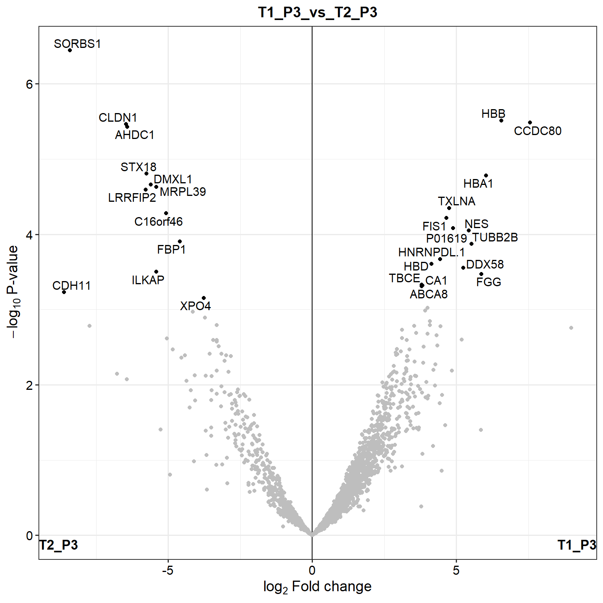
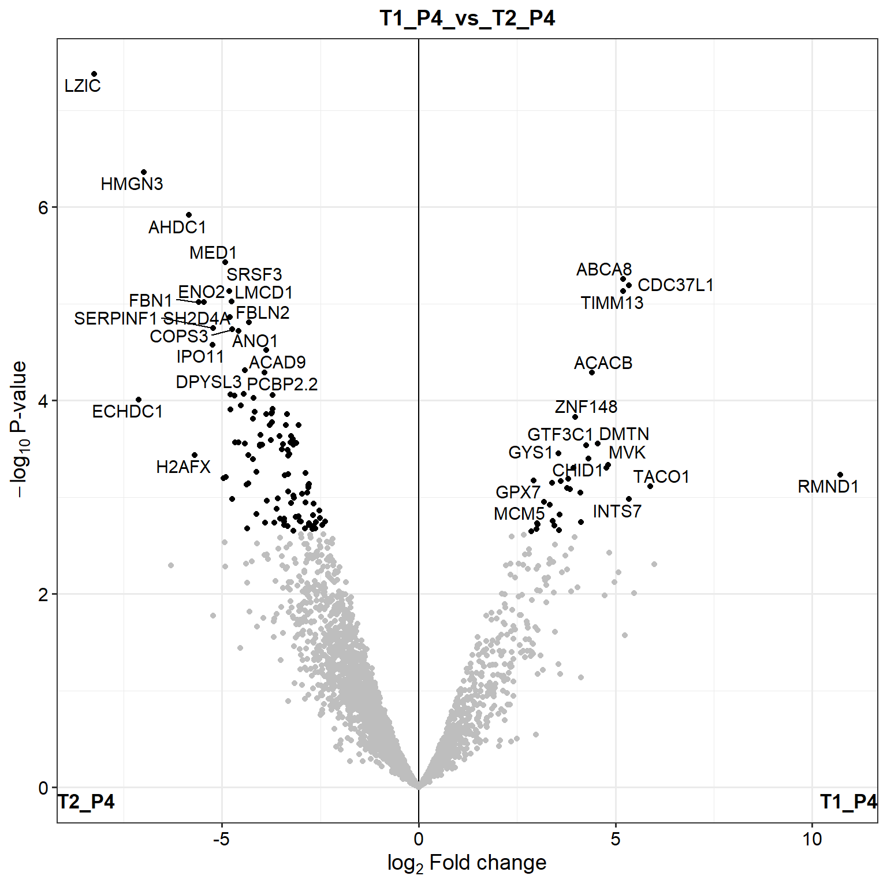

Integration old analysis T1 vs T2
Fabio Bedin | MS-Unit
Last updated: 2021-06-17
Checks: 7 0
Knit directory: OC_Nezi/
This reproducible R Markdown analysis was created with workflowr (version 1.6.2). The Checks tab describes the reproducibility checks that were applied when the results were created. The Past versions tab lists the development history.
Great! Since the R Markdown file has been committed to the Git repository, you know the exact version of the code that produced these results.
Great job! The global environment was empty. Objects defined in the global environment can affect the analysis in your R Markdown file in unknown ways. For reproduciblity it’s best to always run the code in an empty environment.
The command set.seed(20210520) was run prior to running the code in the R Markdown file. Setting a seed ensures that any results that rely on randomness, e.g. subsampling or permutations, are reproducible.
Great job! Recording the operating system, R version, and package versions is critical for reproducibility.
Nice! There were no cached chunks for this analysis, so you can be confident that you successfully produced the results during this run.
Great job! Using relative paths to the files within your workflowr project makes it easier to run your code on other machines.
Great! You are using Git for version control. Tracking code development and connecting the code version to the results is critical for reproducibility.
The results in this page were generated with repository version e35e7be. See the Past versions tab to see a history of the changes made to the R Markdown and HTML files.
Note that you need to be careful to ensure that all relevant files for the analysis have been committed to Git prior to generating the results (you can use wflow_publish or wflow_git_commit). workflowr only checks the R Markdown file, but you know if there are other scripts or data files that it depends on. Below is the status of the Git repository when the results were generated:
Ignored files:
Ignored: .RData
Ignored: .Rhistory
Ignored: .Rproj.user/
Ignored: analysis/.RData
Untracked files:
Untracked: T1_vs_T2.tex
Untracked: analysis/T2_R_vs_T2_S_gene_name.txt
Untracked: analysis/test.cys
Untracked: code/custom_functions.R
Untracked: data/HeatMap_t1_t2.png
Untracked: data/HeatMap_t1_tme1.png
Untracked: data/HeatMap_t2_tme2.png
Untracked: data/Nezi_unique_t1_Vs_t2.PNG
Untracked: data/Nezi_unique_t1_Vs_tme1.PNG
Untracked: data/Nezi_unique_t2_Vs_tme2.PNG
Untracked: data/anova_table_t1_t2.txt
Untracked: data/anova_table_t1_tme1.txt
Untracked: data/anova_table_t2_tme2.txt
Untracked: data/expdesign_SI_S_R.tsv
Untracked: data/expdesign_old_exp.tsv
Untracked: data/proteinGroups.txt
Untracked: site_libs/
Unstaged changes:
Modified: analysis/_site.yml
Deleted: analysis/about.Rmd
Deleted: analysis/license.Rmd
Note that any generated files, e.g. HTML, png, CSS, etc., are not included in this status report because it is ok for generated content to have uncommitted changes.
These are the previous versions of the repository in which changes were made to the R Markdown (analysis/Integration_old_analysis.Rmd) and HTML (docs/Integration_old_analysis.html) files. If you’ve configured a remote Git repository (see ?wflow_git_remote), click on the hyperlinks in the table below to view the files as they were in that past version.
| File | Version | Author | Date | Message |
|---|---|---|---|---|
| Rmd | e35e7be | FabioBedin | 2021-06-17 | wflow_publish(here::here(c(“analysis/index.Rmd”, “analysis/Integration_old_analysis.Rmd”, |
Integration old analysis
knitr::opts_chunk$set(fig.align = "center")
library("MBQN")
library("dplyr")
library("tidyr")
library("DEP")
library("SummarizedExperiment")
library("preprocessCore")
library("tibble")
library("ggplot2")
library("enrichR")
library("DT")
library("stringr")
library("patchwork")
library("here")
library("datapasta")
library("visdat")
library("naniar")source(here::here("code/custom_functions.R"))Summary of previeus results of unique proteins:
knitr::include_graphics(here::here("data/Nezi_unique_t1_Vs_t2.png"))
DEP analysis comparisons
First, I analyzed the data by imputing the missing values. This gave me the possibility to get significant proteins even with more stringent filters: FDR = 0.05 and FC = 1. New results from single patient comparisons are then shown, as well as a direct visualization of how unique proteins in the first analysis behave in this second.
data <- read.csv(here::here("data/proteinGroups.txt"), header = TRUE,stringsAsFactors = FALSE, sep = "\t")
data <- data[data$Reverse != "+" & data$Potential.contaminant != "+" & data$Only.identified.by.site != "+",]
data_unique <- make_unique(data, "Gene.names", "Protein.IDs", delim = ";")expdesign <- read.table(here::here("data/expdesign_old_exp.tsv"), header = T, stringsAsFactors = F)
cond_1<-"T1_P1"
cond_2<-"T2_P1"
conditions<-c(cond_1,cond_2)
expdesign <- subset(expdesign, condition %in% conditions)
test<- paste(cond_1,cond_2,sep="_vs_")
columns<-match(paste("LFQ.intensity.",expdesign$label,sep=""),colnames(data_unique))
data_se <- make_se(data_unique, columns, expdesign)T1_P1_vs_T2_P1
data_filt <- filter_missval(data_se, thr = 1)
set.seed(20210520)
data_imp_man <- impute(data_filt, fun = "man", shift = 1.8, scale = 0.3)
data_diff <- test_diff_BH(data_imp_man, type = "all")
dep <- add_rejections(data_diff, alpha = 0.05, lfc = 1)
results<-get_results(dep)There are 15 significant proteins in T1_P1_vs_T2_P1 comparison.
Visualization of the results:
Volcano Plot
plot_volcano(dep, contrast=test, add_names=T,label_size=4,adjusted = F)
Results Table
results %>%
filter(significant) %>%
select(-significant, -ends_with("centered")) %>%
pivot_longer(
cols = ends_with(c("p.val", "p.adj", "significant", "ratio")),
names_to = c("comparison", ".value"),
names_pattern = "(.*_.*_.*_.*_.*)_(.*)") %>%
arrange(name, p.adj) %>%
relocate(comparison) %>%
select(-comparison) %>%
mutate(across(ends_with(c("p.val", "p.adj")), format, scientific = T, digits = 2)) %>%
mutate(significant = str_to_title(significant)) %>%
DT::datatable(options = list(
columnDefs = list(list(className = 'dt-center', targets = 1:6)),
pageLength = 10))Old plot + Unique
unique_vec <- c("ABCA8", "PLSCR1", "SMNDC1", "AFTPH", "AHDC1", "CLDN1", "CTSL", "DMXL1", "FAM83H", "FNBP1L", "PARD3B", "STX18", "CCDC80", "GSDMA", "IGKV1D-13", "METTL14", "PIP", "PLEKHO2", "PLSCR1", "TAB1")
plot_volcano_3(dep, contrast=test, add_names=T,label_size=4,adjusted = F)Unique Table
results %>%
select(starts_with("name") | starts_with(test)) %>%
filter(name %in% unique_vec) %>%
arrange(across(ends_with("p.adj"))) %>%
mutate(across(2:3, format, scientific = T, digits = 2)) %>%
dplyr::rename_with(~ tolower(gsub(paste0(test,"_"), "", .x)), .cols = starts_with(test)) %>%
DT::datatable()expdesign <- read.table(here::here("data/expdesign_old_exp.tsv"), header = T, stringsAsFactors = F)
cond_1<-"T1_P2"
cond_2<-"T2_P2"
conditions<-c(cond_1,cond_2)
expdesign <- subset(expdesign, condition %in% conditions)
test<- paste(cond_1,cond_2,sep="_vs_")
columns<-match(paste("LFQ.intensity.",expdesign$label,sep=""),colnames(data_unique))
data_se <- make_se(data_unique, columns, expdesign)T1_P2_vs_T2_P2
data_filt <- filter_missval(data_se, thr = 1)
set.seed(20210520)
data_imp_man <- impute(data_filt, fun = "man", shift = 1.8, scale = 0.3)
data_diff <- test_diff_BH(data_imp_man, type = "all")
dep <- add_rejections(data_diff, alpha = 0.05, lfc = 1)
results<-get_results(dep)There are 38 significant proteins in T1_P2_vs_T2_P2 comparison.
Visualization of the results:
Volcano Plot
plot_volcano(dep, contrast=test, add_names=T,label_size=4,adjusted = F)Results Table
results %>%
filter(significant) %>%
select(-significant, -ends_with("centered")) %>%
pivot_longer(
cols = ends_with(c("p.val", "p.adj", "significant", "ratio")),
names_to = c("comparison", ".value"),
names_pattern = "(.*_.*_.*_.*_.*)_(.*)") %>%
arrange(name, p.adj) %>%
relocate(comparison) %>%
select(-comparison) %>%
mutate(across(ends_with(c("p.val", "p.adj")), format, scientific = T, digits = 2)) %>%
mutate(significant = str_to_title(significant)) %>%
DT::datatable(options = list(
columnDefs = list(list(className = 'dt-center', targets = 1:6)),
pageLength = 10))Old plot + Unique
unique_vec <- c("ABCA8", "PLSCR1", "SMNDC1", "AFTPH", "AHDC1", "CLDN1", "CTSL", "DMXL1", "FAM83H", "FNBP1L", "PARD3B", "STX18", "LSM3", "LZIC", "POP7", "XPO4")
plot_volcano_3(dep, contrast=test, add_names=T,label_size=4,adjusted = F)Unique Table
results %>% select(starts_with("name") | starts_with(test)) %>% filter(name %in% unique_vec) %>% arrange(across(ends_with("p.adj"))) %>% mutate(across(2:3, format, scientific = T, digits = 2)) %>% dplyr::rename_with(~ tolower(gsub(paste0(test,"_"), "", .x)), .cols = starts_with(test)) %>% DT::datatable()expdesign <- read.table(here::here("data/expdesign_old_exp.tsv"), header = T, stringsAsFactors = F)
cond_1<-"T1_P3"
cond_2<-"T2_P3"
conditions<-c(cond_1,cond_2)
expdesign <- subset(expdesign, condition %in% conditions)
test<- paste(cond_1,cond_2,sep="_vs_")
columns<-match(paste("LFQ.intensity.",expdesign$label,sep=""),colnames(data_unique))
data_se <- make_se(data_unique, columns, expdesign)T1_P3_vs_T2_P3
data_filt <- filter_missval(data_se, thr = 1)
set.seed(20210520)
data_imp_man <- impute(data_filt, fun = "man", shift = 1.8, scale = 0.3)
data_diff <- test_diff_BH(data_imp_man, type = "all")
dep <- add_rejections(data_diff, alpha = 0.05, lfc = 1)
results<-get_results(dep)There are 27 significant proteins in T1_P3_vs_T2_P3 comparison.
Visualization of the results:
Volcano Plot
plot_volcano(dep, contrast=test, add_names=T,label_size=4,adjusted = F)
Results Table
results %>%
filter(significant) %>%
select(-significant, -ends_with("centered")) %>%
pivot_longer(
cols = ends_with(c("p.val", "p.adj", "significant", "ratio")),
names_to = c("comparison", ".value"),
names_pattern = "(.*_.*_.*_.*_.*)_(.*)") %>%
arrange(name, p.adj) %>%
relocate(comparison) %>%
select(-comparison) %>%
mutate(across(ends_with(c("p.val", "p.adj")), format, scientific = T, digits = 2)) %>%
mutate(significant = str_to_title(significant)) %>%
DT::datatable(options = list(
columnDefs = list(list(className = 'dt-center', targets = 1:6)),
pageLength = 10))Old plot + Unique
unique_vec <- c("ABCA8", "PLSCR1", "SMNDC1", "AFTPH", "AHDC1", "CLDN1", "CTSL", "DMXL1", "FAM83H", "FNBP1L", "PARD3B", "STX18", "GTF3C1", "MBLAC2", "RMND1", "RPL37A", "WISP2")
plot_volcano_3(dep, contrast=test, add_names=T,label_size=4,adjusted = F)Unique Table
results %>% select(starts_with("name") | starts_with(test)) %>% filter(name %in% unique_vec) %>% arrange(across(ends_with("p.adj"))) %>% mutate(across(2:3, format, scientific = T, digits = 2)) %>% dplyr::rename_with(~ tolower(gsub(paste0(test,"_"), "", .x)), .cols = starts_with(test)) %>% DT::datatable()expdesign <- read.table(here::here("data/expdesign_old_exp.tsv"), header = T, stringsAsFactors = F)
cond_1<-"T1_P4"
cond_2<-"T2_P4"
conditions<-c(cond_1,cond_2)
expdesign <- subset(expdesign, condition %in% conditions)
test<- paste(cond_1,cond_2,sep="_vs_")
columns<-match(paste("LFQ.intensity.",expdesign$label,sep=""),colnames(data_unique))
data_se <- make_se(data_unique, columns, expdesign)T1_P4_vs_T2_P4
data_filt <- filter_missval(data_se, thr = 1)
set.seed(20210520)
data_imp_man <- impute(data_filt, fun = "man", shift = 1.8, scale = 0.3)
data_diff <- test_diff_BH(data_imp_man, type = "all")
dep <- add_rejections(data_diff, alpha = 0.05, lfc = 1)
results<-get_results(dep)There are 143 significant proteins in T1_P4_vs_T2_P4 comparison.
Visualization of the results:
Volcano Plot
plot_volcano(dep, contrast=test, add_names=T,label_size=4,adjusted = F)
Results Table
results %>%
filter(significant) %>%
select(-significant, -ends_with("centered")) %>%
pivot_longer(
cols = ends_with(c("p.val", "p.adj", "significant", "ratio")),
names_to = c("comparison", ".value"),
names_pattern = "(.*_.*_.*_.*_.*)_(.*)") %>%
arrange(name, p.adj) %>%
relocate(comparison) %>%
select(-comparison) %>%
mutate(across(ends_with(c("p.val", "p.adj")), format, scientific = T, digits = 2)) %>%
mutate(significant = str_to_title(significant)) %>%
DT::datatable(options = list(
columnDefs = list(list(className = 'dt-center', targets = 1:6)),
pageLength = 10))Old plot + Unique
unique_vec <- c("ABCA8", "PLSCR1", "SMNDC1", "AFTPH", "AHDC1", "CLDN1", "CTSL", "DMXL1", "FAM83H", "FNBP1L", "PARD3B", "STX18", "ABHD16A", "ATP5J", "CHMP2A", "FAM98B", "FBP1", "GIPC1", "HLA-DQB1", "MRPL39", "NUDT15", "PFN2", "PLP2", "RPLP1", "SYPL1", "THG1L", "TRIM23")
plot_volcano_3(dep, contrast=test, add_names=T,label_size=4,adjusted = F)Unique Table
results %>% select(starts_with("name") | starts_with(test)) %>% filter(name %in% unique_vec) %>% arrange(across(ends_with("p.adj"))) %>% mutate(across(2:3, format, scientific = T, digits = 2)) %>% dplyr::rename_with(~ tolower(gsub(paste0(test,"_"), "", .x)), .cols = starts_with(test)) %>% DT::datatable()expdesign <- read.table(here::here("data/expdesign_old_exp.tsv"), header = T, stringsAsFactors = F)
cond_1<-"T1_P5"
cond_2<-"T2_P5"
conditions<-c(cond_1,cond_2)
expdesign <- subset(expdesign, condition %in% conditions)
test<- paste(cond_1,cond_2,sep="_vs_")
columns<-match(paste("LFQ.intensity.",expdesign$label,sep=""),colnames(data_unique))
data_se <- make_se(data_unique, columns, expdesign)T1_P5_vs_T2_P5
data_filt <- filter_missval(data_se, thr = 1)
set.seed(20210520)
data_imp_man <- impute(data_filt, fun = "man", shift = 1.8, scale = 0.3)
data_diff <- test_diff_BH(data_imp_man, type = "all")
dep <- add_rejections(data_diff, alpha = 0.05, lfc = 1)
results<-get_results(dep)There are 42 significant proteins in T1_P5_vs_T2_P5 comparison.
Visualization of the results:
Volcano Plot
plot_volcano(dep, contrast=test, add_names=T,label_size=4,adjusted = F)Results Table
results %>%
filter(significant) %>%
select(-significant, -ends_with("centered")) %>%
pivot_longer(
cols = ends_with(c("p.val", "p.adj", "significant", "ratio")),
names_to = c("comparison", ".value"),
names_pattern = "(.*_.*_.*_.*_.*)_(.*)") %>%
arrange(name, p.adj) %>%
relocate(comparison) %>%
select(-comparison) %>%
mutate(across(ends_with(c("p.val", "p.adj")), format, scientific = T, digits = 2)) %>%
mutate(significant = str_to_title(significant)) %>%
DT::datatable(options = list(
columnDefs = list(list(className = 'dt-center', targets = 1:6)),
pageLength = 10))Old plot + Unique
unique_vec <- c("ABCA8", "PLSCR1", "SMNDC1", "AFTPH", "AHDC1", "CLDN1", "CTSL", "DMXL1", "FAM83H", "FNBP1L", "PARD3B", "STX18", "FAM195B", "FCN3", "GCA", "LLPH", "MVD", "NFX1", "RANBP1", "SPOCK2", "TACO1", "TMED5", "USMG5")
plot_volcano_3(dep, contrast=test, add_names=T,label_size=4,adjusted = F)Unique Table
results %>% select(starts_with("name") | starts_with(test)) %>% filter(name %in% unique_vec) %>% arrange(across(ends_with("p.adj"))) %>% mutate(across(2:3, format, scientific = T, digits = 2)) %>% dplyr::rename_with(~ tolower(gsub(paste0(test,"_"), "", .x)), .cols = starts_with(test)) %>% DT::datatable()expdesign <- read.table(here::here("data/expdesign_old_exp.tsv"), header = T, stringsAsFactors = F)
cond_1<-"T1_P7"
cond_2<-"T2_P7"
conditions<-c(cond_1,cond_2)
expdesign <- subset(expdesign, condition %in% conditions)
test<- paste(cond_1,cond_2,sep="_vs_")
columns<-match(paste("LFQ.intensity.",expdesign$label,sep=""),colnames(data_unique))
data_se <- make_se(data_unique, columns, expdesign)T1_P7_vs_T2_P7
data_filt <- filter_missval(data_se, thr = 1)
set.seed(20210520)
data_imp_man <- impute(data_filt, fun = "man", shift = 1.8, scale = 0.3)
data_diff <- test_diff_BH(data_imp_man, type = "all")
dep <- add_rejections(data_diff, alpha = 0.05, lfc = 1)
results<-get_results(dep)There are 1 significant proteins in T1_P7_vs_T2_P7 comparison.
Visualization of the results:
Volcano Plot
plot_volcano(dep, contrast=test, add_names=T,label_size=4,adjusted = F)Results Table
results %>%
filter(significant) %>%
select(-significant, -ends_with("centered")) %>%
pivot_longer(
cols = ends_with(c("p.val", "p.adj", "significant", "ratio")),
names_to = c("comparison", ".value"),
names_pattern = "(.*_.*_.*_.*_.*)_(.*)") %>%
arrange(name, p.adj) %>%
relocate(comparison) %>%
select(-comparison) %>%
mutate(across(ends_with(c("p.val", "p.adj")), format, scientific = T, digits = 2)) %>%
mutate(significant = str_to_title(significant)) %>%
DT::datatable(options = list(
columnDefs = list(list(className = 'dt-center', targets = 1:6)),
pageLength = 10))Old plot + Unique
unique_vec <- c("ABCA8", "PLSCR1", "SMNDC1", "AFTPH", "AHDC1", "CLDN1", "CTSL", "DMXL1", "FAM83H", "FNBP1L", "PARD3B", "STX18", "BIRC6", "LTBP3", "VAMP3", "LTBP4")
plot_volcano_3(dep, contrast=test, add_names=T,label_size=4,adjusted = F)Unique Table
results %>% select(starts_with("name") | starts_with(test)) %>% filter(name %in% unique_vec) %>% arrange(across(ends_with("p.adj"))) %>% mutate(across(2:3, format, scientific = T, digits = 2)) %>% dplyr::rename_with(~ tolower(gsub(paste0(test,"_"), "", .x)), .cols = starts_with(test)) %>% DT::datatable()
sessionInfo()R version 4.0.3 (2020-10-10)
Platform: x86_64-w64-mingw32/x64 (64-bit)
Running under: Windows 10 x64 (build 19042)
Matrix products: default
locale:
[1] LC_COLLATE=Italian_Italy.1252 LC_CTYPE=Italian_Italy.1252
[3] LC_MONETARY=Italian_Italy.1252 LC_NUMERIC=C
[5] LC_TIME=Italian_Italy.1252
attached base packages:
[1] parallel stats4 stats graphics grDevices utils datasets
[8] methods base
other attached packages:
[1] naniar_0.6.1 visdat_0.5.3
[3] datapasta_3.1.0 here_1.0.1
[5] patchwork_1.1.1 stringr_1.4.0
[7] DT_0.18 enrichR_3.0
[9] ggplot2_3.3.3 tibble_3.1.0
[11] preprocessCore_1.52.1 SummarizedExperiment_1.20.0
[13] Biobase_2.50.0 GenomicRanges_1.42.0
[15] GenomeInfoDb_1.26.2 IRanges_2.24.1
[17] S4Vectors_0.28.1 BiocGenerics_0.36.0
[19] MatrixGenerics_1.2.1 matrixStats_0.58.0
[21] DEP_1.12.0 tidyr_1.1.3
[23] dplyr_1.0.5 MBQN_2.2.0
[25] workflowr_1.6.2
loaded via a namespace (and not attached):
[1] circlize_0.4.12 BiocFileCache_1.14.0 plyr_1.8.6
[4] gmm_1.6-6 shinydashboard_0.7.1 crosstalk_1.1.1
[7] BiocParallel_1.24.1 digest_0.6.27 foreach_1.5.1
[10] htmltools_0.5.1.1 fansi_0.4.2 magrittr_2.0.1
[13] memoise_2.0.0 cluster_2.1.0 doParallel_1.0.16
[16] limma_3.46.0 ComplexHeatmap_2.6.2 readr_1.4.0
[19] imputeLCMD_2.0 sandwich_3.0-0 colorspace_2.0-0
[22] blob_1.2.1 rappdirs_0.3.3 ggrepel_0.9.1
[25] xfun_0.23 crayon_1.4.1 RCurl_1.98-1.2
[28] jsonlite_1.7.2 impute_1.64.0 zoo_1.8-9
[31] iterators_1.0.13 glue_1.4.2 gtable_0.3.0
[34] zlibbioc_1.36.0 XVector_0.30.0 GetoptLong_1.0.5
[37] DelayedArray_0.16.2 shape_1.4.5 scales_1.1.1
[40] vsn_3.58.0 mvtnorm_1.1-1 DBI_1.1.1
[43] Rcpp_1.0.6 mzR_2.24.1 xtable_1.8-4
[46] clue_0.3-58 bit_4.0.4 htmlwidgets_1.5.3
[49] httr_1.4.2 RColorBrewer_1.1-2 ellipsis_0.3.1
[52] farver_2.1.0 pkgconfig_2.0.3 XML_3.99-0.6
[55] sass_0.3.1 dbplyr_2.1.1 utf8_1.2.1
[58] labeling_0.4.2 tidyselect_1.1.1 rlang_0.4.10
[61] later_1.1.0.1 munsell_0.5.0 tools_4.0.3
[64] cachem_1.0.4 generics_0.1.0 RSQLite_2.2.5
[67] evaluate_0.14 fastmap_1.1.0 mzID_1.28.0
[70] yaml_2.2.1 knitr_1.31 bit64_4.0.5
[73] fs_1.5.0 purrr_0.3.4 ncdf4_1.17
[76] whisker_0.4 mime_0.10 compiler_4.0.3
[79] curl_4.3 png_0.1-7 affyio_1.60.0
[82] bslib_0.2.4 stringi_1.5.3 highr_0.8
[85] MSnbase_2.15.7 lattice_0.20-41 ProtGenerics_1.22.0
[88] Matrix_1.2-18 tmvtnorm_1.4-10 vctrs_0.3.7
[91] pillar_1.6.0 norm_1.0-9.5 lifecycle_1.0.0
[94] BiocManager_1.30.10 jquerylib_0.1.3 MALDIquant_1.19.3
[97] GlobalOptions_0.1.2 bitops_1.0-6 httpuv_1.5.5
[100] R6_2.5.0 pcaMethods_1.82.0 affy_1.68.0
[103] promises_1.2.0.1 codetools_0.2-16 MASS_7.3-53
[106] assertthat_0.2.1 rprojroot_2.0.2 rjson_0.2.20
[109] withr_2.4.2 GenomeInfoDbData_1.2.4 hms_1.0.0
[112] grid_4.0.3 rmarkdown_2.7 Cairo_1.5-12.2
[115] git2r_0.28.0 shiny_1.6.0